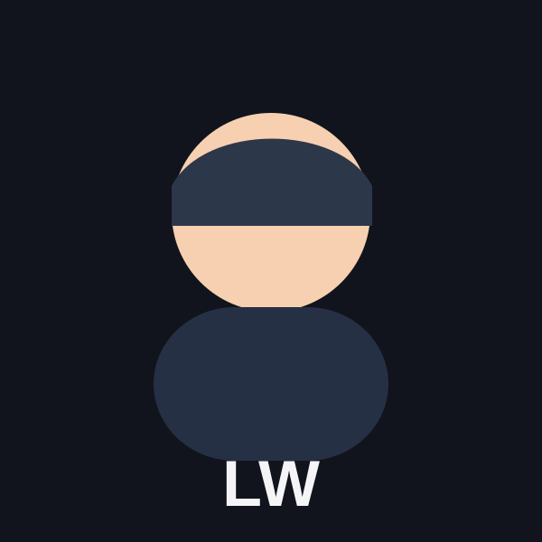
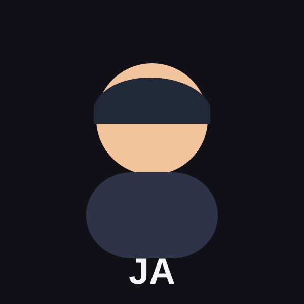
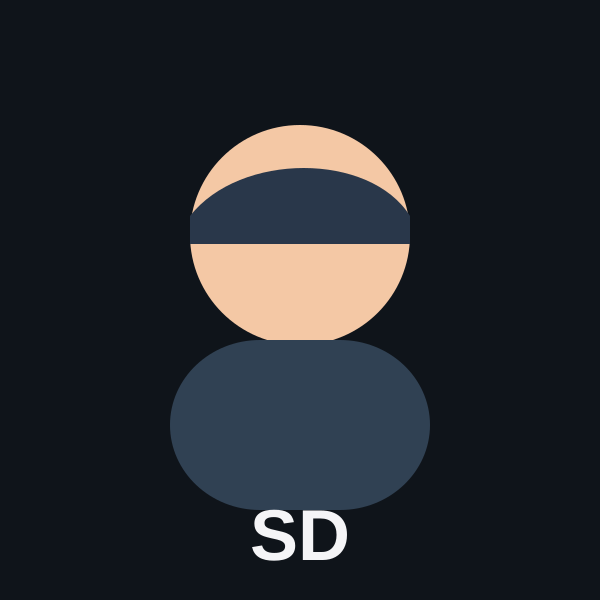
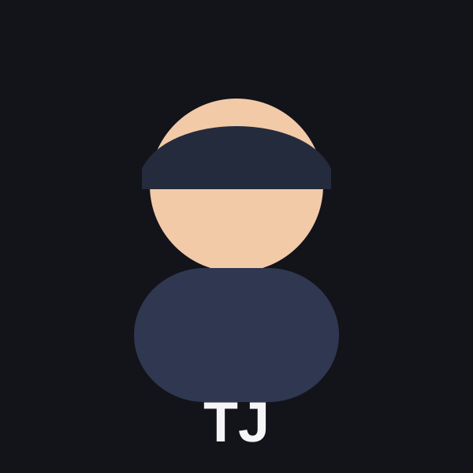

Meet the
team
Four University of Utah students building a mobile chess platform, covering real-time game networking and backend infrastructure to native UI and analysis tooling.

Landon West
[PLACEHOLDER: 150–250 word bio for Landon West. Include degree program and expected graduation date at the University of Utah. Describe relevant coursework, technical interests, and any prior experience that connects to the Overthrow Chess project, for example, mobile development, systems programming, game logic, or UI/UX design. Mention specific contributions to the capstone project such as features built, systems designed, or technical challenges solved. Optionally include personal interests, hobbies, or career goals that give reviewers a sense of who you are beyond the project. This placeholder must be replaced with a real bio of 150–250 words before final submission. The rubric requires bios in this word range for each team member.]
Jacob Anderson
[PLACEHOLDER: 150–250 word bio for Jacob Anderson. Include degree program and expected graduation date at the University of Utah. Describe relevant coursework, technical interests, and any prior experience that connects to the Overthrow Chess project, for example, backend development, database design, networking, or algorithm work. Mention specific contributions to the capstone project such as features built, systems designed, or technical challenges solved. Optionally include personal interests, hobbies, or career goals that give reviewers a sense of who you are beyond the project. This placeholder must be replaced with a real bio of 150–250 words before final submission. The rubric requires bios in this word range for each team member.]


Solomon Duffin
[PLACEHOLDER: 150–250 word bio for Solomon Duffin. Include degree program and expected graduation date at the University of Utah. Describe relevant coursework, technical interests, and any prior experience that connects to the Overthrow Chess project, for example, infrastructure, DevOps, real-time systems, or security. Mention specific contributions to the capstone project such as features built, systems designed, or technical challenges solved. Optionally include personal interests, hobbies, or career goals that give reviewers a sense of who you are beyond the project. This placeholder must be replaced with a real bio of 150–250 words before final submission. The rubric requires bios in this word range for each team member.]
TJ Hess
[PLACEHOLDER: 150–250 word bio for TJ Hess. Include degree program and expected graduation date at the University of Utah. Describe relevant coursework, technical interests, and any prior experience that connects to the Overthrow Chess project, for example, frontend development, chess engine integration, testing, or analysis tooling. Mention specific contributions to the capstone project such as features built, systems designed, or technical challenges solved. Optionally include personal interests, hobbies, or career goals that give reviewers a sense of who you are beyond the project. This placeholder must be replaced with a real bio of 150–250 words before final submission. The rubric requires bios in this word range for each team member.]
